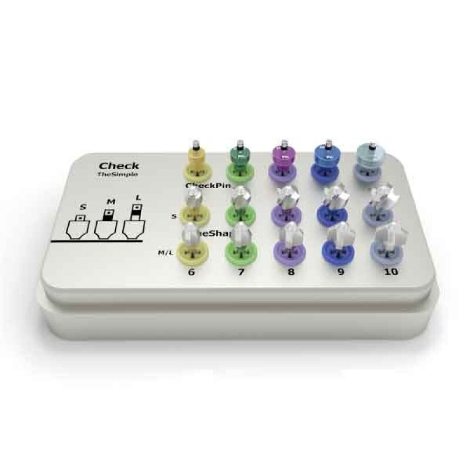
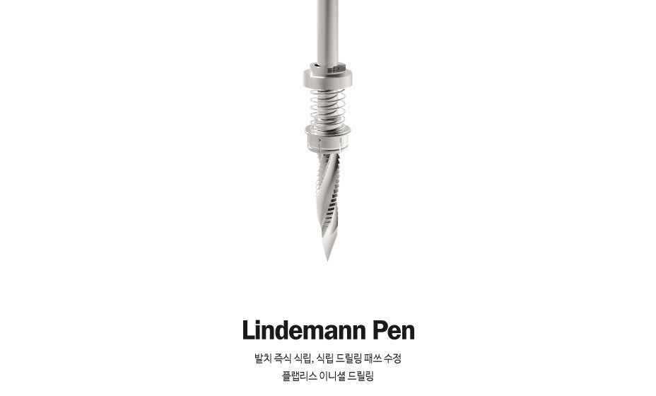

×2
SurgicalPen
린데만 타입 Pen-Drill, 직경 2.3. Cup과 체결해 사용합니다.
Pen-Drill ×2 · Pen-Cup ×5 · SurgicalPin ×5 · BoneShaper ×6 · Kit Case ×1
린데만 타입 Pen-Drill, 직경 2.3. Cup과 체결해 사용합니다.

최종 크라운과 비슷한 직경(Ø6–10)을 색으로 골라 Pen에 끼웁니다.

CheckPin 타입에 BonePin 기능을 더한 핀. 수직 공간 · 패스 · 교합 높이를 봅니다.

S6·7·9 · M6·7·9. 식립 후 cortical bone를 성형합니다.

구성품을 색 규격대로 수납 · 보관하는 케이스입니다.

끝이 뾰족한 린데만 타입으로 초기 위치를 정하고, Cup으로 인접치 간격과 교합 높이를 가늠합니다.
드릴링한 자리에 Cup과 같은 색 · 직경의 핀을 꽂아 상하악 수직 높이와 수평 위치를 눈으로 확인합니다.
식립 후 cortical bone과 어버트먼트의 간섭을 줄이기 위해, 픽스처에 수직으로 세워 성형합니다.
| SurgicalPen | 핸드피스 20:1 · 300~1,500 RPM · 45~55 N·cm · 주수하 |
|---|---|
| BoneShaper | 20:1 · 1,000~1,500 rpm · 45~55 Torque · 주수하 3~5초 |
| 사용 습관 | 양손 파지 · 드릴 회전이 완전히 멈춘 뒤 이동 |
| 세척 · 멸균 | Cup과 드릴은 분리 세척, Autoclave 132°C · 15분 (조립 상태) |
표기는 abuts.fit 스토어 상세 기준입니다. 품목 · 모델별 허가 · 신고 정보와 사용 방법은 제품 첨부문서에서 확인하십시오.
근원심 크기의 서지컬펜으로 드릴링을 시작하고, 서지컬핀으로 대합치 간격을 확인하며 식립합니다. 힐링 후 같은 색 규격의 어벗으로 보철을 이어갑니다.
색으로 구분된 키트에서 규격을 고르고, 사용 후 세척 · Autoclave 멸균(132°C, 15분)으로 기구를 관리합니다.
사용 치과 · 기공소의 후기는 동의를 받은 실제 후기만, 확인을 거쳐 이곳에 싣습니다.